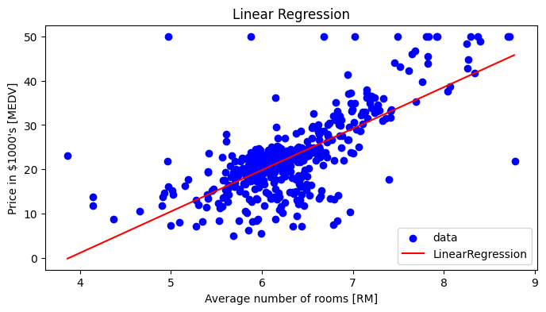

Code
not mountednot mounted<>:6: SyntaxWarning: invalid escape sequence '\s'
<>:6: SyntaxWarning: invalid escape sequence '\s'
C:\Users\suzuk\AppData\Local\Temp\ipykernel_26716\1922502560.py:6: SyntaxWarning: invalid escape sequence '\s'
sep="\s+")| CRIM | ZN | INDUS | CHAS | NOX | RM | AGE | DIS | RAD | TAX | PTRATIO | B | LSTAT | MEDV | |
|---|---|---|---|---|---|---|---|---|---|---|---|---|---|---|
| 0 | 0.006 | 18.000 | 2.310 | 0 | 0.538 | 6.575 | 65.200 | 4.090 | 1 | 296.000 | 15.300 | 396.900 | 4.980 | 24.000 |
| 1 | 0.027 | 0.000 | 7.070 | 0 | 0.469 | 6.421 | 78.900 | 4.967 | 2 | 242.000 | 17.800 | 396.900 | 9.140 | 21.600 |
| 2 | 0.027 | 0.000 | 7.070 | 0 | 0.469 | 7.185 | 61.100 | 4.967 | 2 | 242.000 | 17.800 | 392.830 | 4.030 | 34.700 |
| 3 | 0.032 | 0.000 | 2.180 | 0 | 0.458 | 6.998 | 45.800 | 6.062 | 3 | 222.000 | 18.700 | 394.630 | 2.940 | 33.400 |
| 4 | 0.069 | 0.000 | 2.180 | 0 | 0.458 | 7.147 | 54.200 | 6.062 | 3 | 222.000 | 18.700 | 396.900 | 5.330 | 36.200 |
<class 'pandas.core.frame.DataFrame'>
RangeIndex: 506 entries, 0 to 505
Data columns (total 14 columns):
# Column Non-Null Count Dtype
--- ------ -------------- -----
0 CRIM 506 non-null float64
1 ZN 506 non-null float64
2 INDUS 506 non-null float64
3 CHAS 506 non-null int64
4 NOX 506 non-null float64
5 RM 506 non-null float64
6 AGE 506 non-null float64
7 DIS 506 non-null float64
8 RAD 506 non-null int64
9 TAX 506 non-null float64
10 PTRATIO 506 non-null float64
11 B 506 non-null float64
12 LSTAT 506 non-null float64
13 MEDV 506 non-null float64
dtypes: float64(12), int64(2)
memory usage: 55.5 KB| CRIM | ZN | INDUS | CHAS | NOX | RM | AGE | DIS | RAD | TAX | PTRATIO | B | LSTAT | MEDV | |
|---|---|---|---|---|---|---|---|---|---|---|---|---|---|---|
| count | 506.000 | 506.000 | 506.000 | 506.000 | 506.000 | 506.000 | 506.000 | 506.000 | 506.000 | 506.000 | 506.000 | 506.000 | 506.000 | 506.000 |
| mean | 3.614 | 11.364 | 11.137 | 0.069 | 0.555 | 6.285 | 68.575 | 3.795 | 9.549 | 408.237 | 18.456 | 356.674 | 12.653 | 22.533 |
| std | 8.602 | 23.322 | 6.860 | 0.254 | 0.116 | 0.703 | 28.149 | 2.106 | 8.707 | 168.537 | 2.165 | 91.295 | 7.141 | 9.197 |
| min | 0.006 | 0.000 | 0.460 | 0.000 | 0.385 | 3.561 | 2.900 | 1.130 | 1.000 | 187.000 | 12.600 | 0.320 | 1.730 | 5.000 |
| 25% | 0.082 | 0.000 | 5.190 | 0.000 | 0.449 | 5.885 | 45.025 | 2.100 | 4.000 | 279.000 | 17.400 | 375.377 | 6.950 | 17.025 |
| 50% | 0.257 | 0.000 | 9.690 | 0.000 | 0.538 | 6.208 | 77.500 | 3.207 | 5.000 | 330.000 | 19.050 | 391.440 | 11.360 | 21.200 |
| 75% | 3.677 | 12.500 | 18.100 | 0.000 | 0.624 | 6.623 | 94.075 | 5.188 | 24.000 | 666.000 | 20.200 | 396.225 | 16.955 | 25.000 |
| max | 88.976 | 100.000 | 27.740 | 1.000 | 0.871 | 8.780 | 100.000 | 12.127 | 24.000 | 711.000 | 22.000 | 396.900 | 37.970 | 50.000 |
count 506.000
mean 22.533
std 9.197
min 5.000
25% 17.025
50% 21.200
75% 25.000
max 50.000
Name: MEDV, dtype: float64上記をみると線形や非線形の形状が容易に見て取れる。このような探索的な可視化をおこのあう
from sklearn.metrics import mean_squared_error
from sklearn.linear_model import LinearRegression
from sklearn.model_selection import train_test_split
X = df.loc[:, ["RM"]]
y = df.loc[:, "MEDV"]
X_train, X_test, y_train, y_test = train_test_split(X, y, test_size=100, random_state=42)
model = LinearRegression()
# 学習
model.fit(X_train, y_train)LinearRegression()In a Jupyter environment, please rerun this cell to show the HTML representation or trust the notebook.
LinearRegression()
{'copy_X': True, 'fit_intercept': True, 'n_jobs': None, 'positive': False}データと予測値の可視化.
plt.figure(figsize = (8, 4))
X = X_train.values.flatten()
y = y_train.values
x_plt = np.arange(X.min(), X.max(), 0.01)[:, np.newaxis]
y_pred = model.predict(x_plt)
# 学習データの散布図と予測値のプロット
plt.scatter(X, y, color = "blue", label = "data")
plt.plot(x_plt, y_pred, color = "red", label = "LinearRegression")
plt.ylabel("Price in $1000's [MEDV]")
plt.xlabel("Average number of rooms [RM]")
plt.title("Linear Regression")
plt.legend()
plt.show()c:\pyenv\py312\Lib\site-packages\sklearn\base.py:465: UserWarning: X does not have valid feature names, but LinearRegression was fitted with feature names
warnings.warn(
データ、利用するライブラリはこれまでと同様である。
X = df.drop(labels = ["MEDV"], axis = 1)
y = df["MEDV"]
X_train, X_test, y_train, y_test = train_test_split(X, y, shuffle = True, test_size=0.2, random_state=0)
# 特徴量の標準化
from sklearn.preprocessing import StandardScaler
scaler = StandardScaler()
num_cols = X.select_dtypes(include=["float64", "int64"]).columns
# 学習データだけで学習させる
scaler.fit(X_train[num_cols])
# テストデータについても変換してしまう
X_train[num_cols] = scaler.transform(X_train[num_cols])
X_test[num_cols] = scaler.transform(X_test[num_cols])
| CRIM | ZN | INDUS | CHAS | NOX | RM | AGE | DIS | RAD | TAX | PTRATIO | B | LSTAT | |
|---|---|---|---|---|---|---|---|---|---|---|---|---|---|
| count | 404.000 | 404.000 | 404.000 | 404.000 | 404.000 | 404.000 | 404.000 | 404.000 | 404.000 | 404.000 | 404.000 | 404.000 | 404.000 |
| mean | -0.000 | 0.000 | -0.000 | 0.000 | -0.000 | 0.000 | -0.000 | -0.000 | -0.000 | 0.000 | 0.000 | -0.000 | 0.000 |
| std | 1.001 | 1.001 | 1.001 | 1.001 | 1.001 | 1.001 | 1.001 | 1.001 | 1.001 | 1.001 | 1.001 | 1.001 | 1.001 |
| min | -0.416 | -0.500 | -1.527 | -0.273 | -1.485 | -3.950 | -2.356 | -1.249 | -0.971 | -1.265 | -2.674 | -4.048 | -1.506 |
| 25% | -0.407 | -0.500 | -0.858 | -0.273 | -0.929 | -0.597 | -0.832 | -0.810 | -0.625 | -0.743 | -0.485 | 0.196 | -0.820 |
| 50% | -0.385 | -0.500 | -0.286 | -0.273 | -0.155 | -0.131 | 0.318 | -0.279 | -0.509 | -0.474 | 0.291 | 0.371 | -0.193 |
| 75% | -0.003 | 0.348 | 0.999 | -0.273 | 0.653 | 0.538 | 0.886 | 0.660 | 1.687 | 1.542 | 0.793 | 0.421 | 0.604 |
| max | 10.530 | 3.736 | 2.379 | 3.665 | 2.739 | 3.572 | 1.103 | 4.021 | 1.687 | 1.806 | 1.614 | 0.430 | 3.330 |
| CRIM | ZN | INDUS | CHAS | NOX | RM | AGE | DIS | RAD | TAX | PTRATIO | B | LSTAT | |
|---|---|---|---|---|---|---|---|---|---|---|---|---|---|
| count | 102.000 | 102.000 | 102.000 | 102.000 | 102.000 | 102.000 | 102.000 | 102.000 | 102.000 | 102.000 | 102.000 | 102.000 | 102.000 |
| mean | 0.139 | -0.091 | 0.009 | -0.003 | -0.051 | -0.123 | -0.080 | 0.059 | 0.084 | 0.157 | -0.015 | -0.118 | -0.036 |
| std | 1.259 | 0.935 | 0.908 | 1.000 | 1.034 | 1.056 | 1.011 | 1.064 | 1.030 | 0.926 | 0.936 | 1.142 | 0.893 |
| min | -0.415 | -0.500 | -1.487 | -0.273 | -1.424 | -3.515 | -2.160 | -1.271 | -0.971 | -1.048 | -2.674 | -4.022 | -1.480 |
| 25% | -0.405 | -0.500 | -0.750 | -0.273 | -0.938 | -0.606 | -1.047 | -0.787 | -0.625 | -0.579 | -0.713 | 0.090 | -0.642 |
| 50% | -0.386 | -0.500 | -0.175 | -0.273 | -0.312 | -0.209 | 0.125 | -0.203 | -0.509 | -0.110 | 0.108 | 0.360 | -0.159 |
| 75% | 0.221 | -0.500 | 0.999 | -0.273 | 0.427 | 0.241 | 0.932 | 0.681 | 1.687 | 1.542 | 0.793 | 0.430 | 0.411 |
| max | 8.631 | 3.101 | 1.542 | 3.665 | 2.739 | 3.492 | 1.103 | 3.340 | 1.687 | 1.542 | 1.249 | 0.430 | 3.466 |
{'copy_X': True, 'fit_intercept': True, 'n_jobs': None, 'positive': False}RMSE test: 5.78(array([-0.97082019, 1.05714873, 0.03831099, 0.59450642, -1.8551476 ,
2.57321942, -0.08761547, -2.88094259, 2.11224542, -1.87533131,
-2.29276735, 0.71817947, -3.59245482]),
22.611881188118804)df = pd.read_csv(
"https://archive.ics.uci.edu/ml/machine-learning-databases/housing/housing.data",
header=None,
names =["CRIM", "ZN", "INDUS", "CHAS", "NOX", "RM", "AGE", "DIS", "RAD", "TAX", "PTRATIO", "B", "LSTAT", "MEDV"],
sep="\s+",
)
X_train = df.loc[:100, ["RM"]]
y_train = df.loc[:100, "MEDV"]
X_test = df.loc[101:, ["RM"]]
y_test = df.loc[101:, "MEDV"]<>:5: SyntaxWarning: invalid escape sequence '\s'
<>:5: SyntaxWarning: invalid escape sequence '\s'
C:\Users\suzuk\AppData\Local\Temp\ipykernel_24336\4222003498.py:5: SyntaxWarning: invalid escape sequence '\s'
sep="\s+",{'ccp_alpha': 0.0,
'criterion': 'squared_error',
'max_depth': 1,
'max_features': None,
'max_leaf_nodes': None,
'min_impurity_decrease': 0.0,
'min_samples_leaf': 1,
'min_samples_split': 2,
'min_weight_fraction_leaf': 0.0,
'random_state': 0,
'splitter': 'best'}array([20.1675 , 20.1675 , 30.71428571, 30.71428571, 30.71428571,
20.1675 , 20.1675 , 20.1675 , 20.1675 , 20.1675 ,
20.1675 , 20.1675 , 20.1675 , 20.1675 , 20.1675 ,
20.1675 , 20.1675 , 20.1675 , 20.1675 , 20.1675 ,
20.1675 , 20.1675 , 20.1675 , 20.1675 , 20.1675 ,
20.1675 , 20.1675 , 20.1675 , 20.1675 , 30.71428571,
20.1675 , 20.1675 , 20.1675 , 20.1675 , 20.1675 ,
20.1675 , 20.1675 , 20.1675 , 20.1675 , 30.71428571,
30.71428571, 30.71428571, 20.1675 , 20.1675 , 20.1675 ,
20.1675 , 20.1675 , 20.1675 , 20.1675 , 20.1675 ,
20.1675 , 20.1675 , 20.1675 , 20.1675 , 20.1675 ,
30.71428571, 20.1675 , 30.71428571, 20.1675 , 20.1675 ,
20.1675 , 20.1675 , 20.1675 , 30.71428571, 30.71428571,
20.1675 , 20.1675 , 20.1675 , 20.1675 , 20.1675 ,
20.1675 , 20.1675 , 20.1675 , 20.1675 , 20.1675 ,
20.1675 , 20.1675 , 20.1675 , 20.1675 , 20.1675 ,
30.71428571, 30.71428571, 20.1675 , 20.1675 , 20.1675 ,
30.71428571, 20.1675 , 20.1675 , 30.71428571, 30.71428571,
20.1675 , 20.1675 , 20.1675 , 20.1675 , 20.1675 ,
30.71428571, 20.1675 , 30.71428571, 30.71428571, 30.71428571,
30.71428571])# データと予測値の可視化
plt.figure(figsize = (8, 4))
X = X_train.values.flatten()
y = y_train.values
X_plt = np.linspace(X.min(), X.max(), 100)[:, np.newaxis]
y_pred = model.predict(X_plt)
plt.scatter(X, y, label = "Training data")
plt.plot(X_plt, y_pred, color = "red", label = "Decision Tree")
plt.ylabel("MEDV")
plt.xlabel("RM")
plt.legend()c:\pyenv\py312\Lib\site-packages\sklearn\base.py:465: UserWarning: X does not have valid feature names, but DecisionTreeRegressor was fitted with feature names
warnings.warn(深さ1のときにはレコードを1回だけ2分割して、左葉と右葉の2値を出力する予測モデルを実装した。実務では深さを指定して、指定した深さに到達するまでの２分割を繰り返す。深さが\(d\)のときは最大\(2^d\)に分割される。
{'ccp_alpha': 0,
'criterion': 'squared_error',
'max_depth': 2,
'max_features': None,
'max_leaf_nodes': None,
'min_impurity_decrease': 0.0,
'min_samples_leaf': 1,
'min_samples_split': 2,
'min_weight_fraction_leaf': 0.0,
'random_state': 0,
'splitter': 'best'}array([22.99642857, 22.99642857, 35.4 , 27.2 , 35.4 ,
22.99642857, 18.64423077, 22.99642857, 18.64423077, 18.64423077,
22.99642857, 18.64423077, 18.64423077, 18.64423077, 18.64423077,
18.64423077, 18.64423077, 18.64423077, 18.64423077, 18.64423077,
18.64423077, 18.64423077, 18.64423077, 18.64423077, 18.64423077,
18.64423077, 18.64423077, 18.64423077, 22.99642857, 27.2 ,
18.64423077, 18.64423077, 18.64423077, 18.64423077, 18.64423077,
18.64423077, 18.64423077, 18.64423077, 18.64423077, 27.2 ,
35.4 , 27.2 , 22.99642857, 22.99642857, 18.64423077,
18.64423077, 18.64423077, 18.64423077, 18.64423077, 18.64423077,
18.64423077, 18.64423077, 22.99642857, 18.64423077, 18.64423077,
35.4 , 22.99642857, 27.2 , 22.99642857, 18.64423077,
18.64423077, 18.64423077, 22.99642857, 27.2 , 35.4 ,
22.99642857, 18.64423077, 18.64423077, 18.64423077, 18.64423077,
22.99642857, 18.64423077, 18.64423077, 22.99642857, 22.99642857,
22.99642857, 22.99642857, 18.64423077, 22.99642857, 18.64423077,
27.2 , 27.2 , 22.99642857, 22.99642857, 22.99642857,
27.2 , 18.64423077, 18.64423077, 27.2 , 35.4 ,
22.99642857, 22.99642857, 22.99642857, 22.99642857, 22.99642857,
27.2 , 22.99642857, 35.4 , 35.4 , 35.4 ,
27.2 ])# データと予測値の可視化
plt.figure(figsize = (8, 4))
X = X_train.values.flatten()
y = y_train.values
X_plt = np.linspace(X.min(), X.max(), 100)[:, np.newaxis]
y_pred = model.predict(X_plt)
plt.scatter(X, y, label = "Training data")
plt.plot(X_plt, y_pred, color = "red", label = "Decision Tree")
plt.ylabel("MEDV")
plt.xlabel("RM")
plt.legend()
plt.show()c:\pyenv\py312\Lib\site-packages\sklearn\base.py:465: UserWarning: X does not have valid feature names, but DecisionTreeRegressor was fitted with feature names
warnings.warn(%matplotlib inline
import pandas as pd
import numpy as np
import matplotlib.pyplot as plt
import graphviz
from sklearn.model_selection import train_test_split
from sklearn.metrics import mean_squared_error
df = pd.read_csv(
"https://archive.ics.uci.edu/ml/machine-learning-databases/housing/housing.data",
header=None,
names =["CRIM", "ZN", "INDUS", "CHAS", "NOX", "RM", "AGE", "DIS", "RAD", "TAX", "PTRATIO", "B", "LSTAT", "MEDV"],
sep="\\s+",
)
X = df.drop(labels = ["MEDV"], axis = 1)
y = df["MEDV"]
X.head()| CRIM | ZN | INDUS | CHAS | NOX | RM | AGE | DIS | RAD | TAX | PTRATIO | B | LSTAT | |
|---|---|---|---|---|---|---|---|---|---|---|---|---|---|
| 0 | 0.00632 | 18.0 | 2.31 | 0 | 0.538 | 6.575 | 65.2 | 4.0900 | 1 | 296.0 | 15.3 | 396.90 | 4.98 |
| 1 | 0.02731 | 0.0 | 7.07 | 0 | 0.469 | 6.421 | 78.9 | 4.9671 | 2 | 242.0 | 17.8 | 396.90 | 9.14 |
| 2 | 0.02729 | 0.0 | 7.07 | 0 | 0.469 | 7.185 | 61.1 | 4.9671 | 2 | 242.0 | 17.8 | 392.83 | 4.03 |
| 3 | 0.03237 | 0.0 | 2.18 | 0 | 0.458 | 6.998 | 45.8 | 6.0622 | 3 | 222.0 | 18.7 | 394.63 | 2.94 |
| 4 | 0.06905 | 0.0 | 2.18 | 0 | 0.458 | 7.147 | 54.2 | 6.0622 | 3 | 222.0 | 18.7 | 396.90 | 5.33 |
{'ccp_alpha': 5,
'criterion': 'squared_error',
'max_depth': 4,
'max_features': None,
'max_leaf_nodes': None,
'min_impurity_decrease': 0.0,
'min_samples_leaf': 10,
'min_samples_split': 2,
'min_weight_fraction_leaf': 0.0,
'random_state': None,
'splitter': 'best'}5.950312246327099回帰木での精度を高めるには木を深くする必要があるが、それは過学習のリスクがあり、限界がある。 勾配ブースティング回帰は、回帰木を直列に連結したアルゴリズムである。 浅い回帰木を複数作成してその結果を加重平均した値を予測値として使う。
加重平均の重みは、正解値と１つ前の予測値の残差を元に計算する。詳しいことはこの後解説する。
\[ \hat{y}=\hat{y}^0+ w_1(x) + w_2(x) + \dots + w_K(x) \]
正直、上の式がイマイチよくわからない。重みをそのまま足し込んでいること、１つ前の予測値とは、\(K-1\)個の木を使ったものなのか、などがよくわからない。
⇒ どうやらこれから解説してくれるようである。たとえば残差の平均値を重みにしているようである。
%matplotlib inline
import pandas as pd
import numpy as np
import matplotlib.pyplot as plt
import graphviz
from sklearn.model_selection import train_test_split
from sklearn.metrics import mean_squared_error
df = pd.read_csv(
"https://archive.ics.uci.edu/ml/machine-learning-databases/housing/housing.data",
header=None,
names =["CRIM", "ZN", "INDUS", "CHAS", "NOX", "RM", "AGE", "DIS", "RAD", "TAX", "PTRATIO", "B", "LSTAT", "MEDV"],
sep="\\s+",
)
X_train = df.iloc[:100].filter(items = ["RM"], axis = 1)
y_train = df.iloc[:100]["MEDV"]import lightgbm as lgb
lgb_train = lgb.Dataset(X_train, y_train)
params = {
"objective": "mse",
"metric": "mse",
"learning_rate": .8,
"max_depth": 1,
"min_data_in_leaf": 1,
"min_data_in_bin": 1,
"max_bin": 100,
"seed": 0,
"verbose": -1,
}
model = lgb.train(
params,
lgb_train,
num_boost_round = 1,
valid_sets = [lgb_train],
valid_names = ["train"]
)17.10031135531668(array([21.040891 , 31.60846732]), array([88, 12], dtype=int64))# データと予測値を同時に可視化することで２値の回帰木と同じ分類をしていることがわかる
plt.figure(figsize = (8, 4))
X = X_train.values.flatten()
y = y_train.values
X_plt = np.arange(X.min(), X.max(), .01)[:, np.newaxis]
y_pred = model.predict(X_plt)
# 学習データでの可視化
plt.scatter(X, y, color = "blue", label = "data")
plt.plot(X_plt, y_pred, color = "red", label = "LightGBM")
plt.ylabel("Price in $1000s [MEDV]")
plt.xlabel("average number of rooms [RM]")
plt.title("Boston house-prices")
plt.legend(loc = "upper right")
plt.show()1回ブースティング回帰したときの予測値は次式からなる。 \(\hat{y}^0\)は学習データの全体での平均値である。 二乗誤差で一回だけ更新する例をみるとことで、 アルゴリズムが式のとおり行進出来ていることを確認するというのが目的である
\[ \hat{y} = \hat{y}^0 + \eta w_1(x) \]
samples: 100
pred0: 22.30900000000001# 深さ1の回帰木なので左右の部活となる
threshold = 6.793
X_left = X[X<=threshold];
y_left = y[X<=threshold];
# 左の葉を予測
# - 残差は目的変数の正解値と初期値の差分となる
# - 葉の重みはobjectiveにmseを指定したため残差の平均値となる
# - 自分で書いておいて上の文章がなぜか意味がわからない・・
# - なぜmseだと重みが残差の平均値になるのだろうか
print(f"sample_left: {len(y_left)}")
residual_left = y_left - pred0
weight_left = np.mean(residual_left);
print("weight_left:", weight_left)
y_pred_left = pred0 + .8 * weight_left;
print("y_pred_left:", y_pred_left);sample_left: 88
weight_left: -1.5851363636363758
y_pred_left: 21.040890909090912[10] train's l2: 23.2264
[20] train's l2: 11.4353
[30] train's l2: 8.26905
[40] train's l2: 6.83309
[50] train's l2: 5.886874.965761177880827# 特徴量の重要度の可視化
importances = model.feature_importance(
importance_type = "gain"
)
indices = np.argsort(importances)[::-1]
plt.figure(figsize = (8, 4))
plt.title("Feature Importance")
plt.bar(range(len(indices)), importances[indices])
plt.xticks(range(len(indices)), X.columns[indices], rotation = 90)
plt.show()SHAPはレコード1件ごとの予測値と平均的な予測値の差分を計算して、 差分を特徴量ごとに分解することで、どの特徴量が予測値に貢献するかを教えてくれる。
特徴量\(X\)をモデルに入力したとき予測値の期待値は\(\textrm{E}[\hat{f}(X)]\)となる。
インデックス\(i\)の予測値\(\hat{f}(x_i)\)と平均的な予測値\(\textrm{E}[\hat{f}(x)]\)の差分は特徴量インデックス\(j\)で分解できる.
\[ \hat{f}(x_i)-\textrm{E}[\hat{f}(x)]=\sum_{j=1}^m(\phi_{ij}) \]
作成したexplainerにテストデータの特徴量\(X\)を入力して、SHAP値を計算する。
array([24.33826347, 25.55850304, 22.88538477, 11.58613597, 22.02411837,
20.72080442, 21.86359234, 21.10557067, 21.40360298, 19.23261144,
9.61777349, 13.6106635 , 14.32141005, 9.76631897, 48.25601687,
35.00875917, 21.95652073, 37.80759643, 25.87572833, 22.00650765,
23.13945227, 22.36541355, 19.90861776, 23.78192781, 20.77748124,
18.71856927, 19.06298637, 16.83366361, 42.81339824, 18.96547221,
16.40352523, 16.24413082, 20.68783767, 20.67237901, 24.29716422,
16.26813009, 9.76631897, 21.76083107, 16.2511962 , 15.31180178,
22.50493327, 20.85719768, 23.72487685, 16.82037207, 23.63069676,
22.69888006, 19.02106683, 16.85573098, 15.93691435, 23.13066412,
18.16393601, 18.64008031, 21.32675084, 42.5370897 , 15.85521869,
19.32749944, 20.24974385, 20.30964921, 18.99113574, 18.75245656,
22.33068937, 20.77814028, 32.58636102, 31.77110891, 18.65418033,
29.86652849, 15.53331969, 19.5093324 , 17.2016036 , 20.92305328,
22.12660381, 23.27809658, 26.15053201, 32.81938365, 25.90559469,
9.93819836, 43.24659685, 21.98041858, 23.6518303 , 20.74369915,
24.4009425 , 17.80270523, 17.53592739, 42.93458749, 42.71282222,
23.13945227, 22.51401249, 16.70501676, 25.60918439, 15.8258483 ,
17.9798286 , 11.40325492, 22.59276985, 29.49044256, 21.62153404,
21.29432547, 10.59529386, 23.41397781, 14.93005998, 19.50409152,
23.2343968 , 20.60667604])48.25601687152404SHAP値によってどの特徴量の貢献が大きかったのかplots.waterfallメソッドにより可視化可能である。 予測価格が高かった15件目の値を可視化する.
array([[ 0.07616379, 0. , 0.22663437, ..., 0.89922106,
0.56269372, 2.62651817],
[ 0.56348624, 0. , -0.08134097, ..., -1.14577638,
0.73951067, 2.65578769],
[ 0.29482469, 0. , -0.14339472, ..., 1.23283713,
0.15968409, -1.09213544],
...,
[ 0.29199972, 0. , -0.10377573, ..., -0.69474318,
0.15539382, -0.90536801],
[ 0.15960661, 0. , -0.1468447 , ..., 0.73249154,
0.09297993, 1.35855161],
[ 0.28207422, 0. , -0.09163934, ..., -1.2087129 ,
0.12557371, -1.00348444]])array([[ 0.07616379, 0. , 0.22663437, ..., 0.89922106,
0.56269372, 2.62651817],
[ 0.56348624, 0. , -0.08134097, ..., -1.14577638,
0.73951067, 2.65578769],
[ 0.29482469, 0. , -0.14339472, ..., 1.23283713,
0.15968409, -1.09213544],
...,
[ 0.29199972, 0. , -0.10377573, ..., -0.69474318,
0.15539382, -0.90536801],
[ 0.15960661, 0. , -0.1468447 , ..., 0.73249154,
0.09297993, 1.35855161],
[ 0.28207422, 0. , -0.09163934, ..., -1.2087129 ,
0.12557371, -1.00348444]])